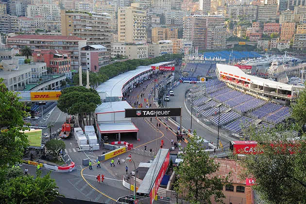

Solicitud de Acreditaciones de Prensa y Paddock Club
Completa el siguiente formulario para tramitar tu solicitud de acceso a las zonas exclusivas del Gran Premio. El envío se procesará abriendo directamente tu gestor de correo predeterminado mediante el protocolo mailto:.

Canales de atención directa
Para consultas telefónicas o protocolo de seguridad en pista, revisa la normativa en el portal de Reglamentos Deportivos de la FIA.